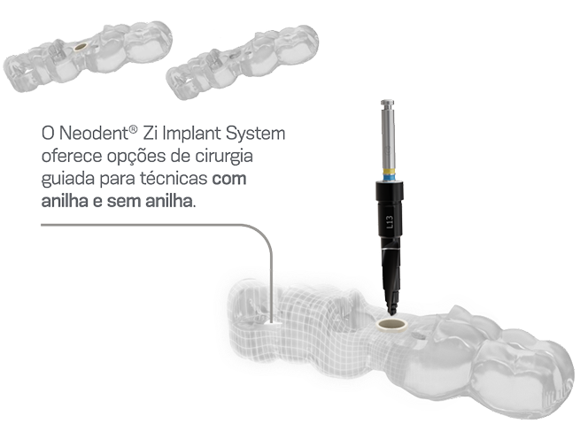
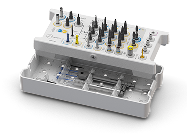

Precisão e previsibilidade com excelentes resultados estéticos
Quando se trata de sistemas de implantes de cerâmica, a técnica
guiada contribui para alcançar resultados estéticos com
previsibilidade e confiança nas decisões de tratamento.
Considerando o posicionamento preciso e a combinação de material
cerâmico com preservação de tecidos moles, o protocolo guiado é mais
eficiente, previsível e favorável ao paciente em comparação aos métodos
cirúrgicos convencionais.

Previsibilidade
Planejamento avançado e protocolo guiado para alcançar o resultado
clínico desejado.
Precisão
Perfuração precisa e instalação do implante.
Eficiência
Redução da necessidade de tomada de decisão durante o protocolo
cirúrgico.
Eficiente e adaptável, sem necessidade de múltiplos kits

O novo Neodent® Zi MultiKit™ é um kit completo concebido para
protocolos convencionais e guiados, permitindo um ambiente cirúrgico
mais organizado, eficiente e adaptável.